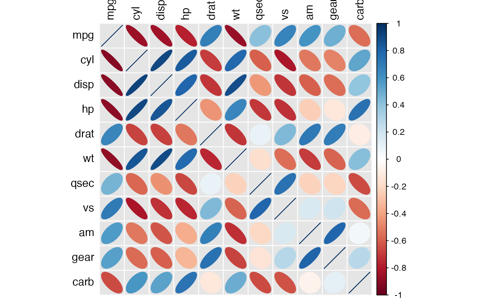

Reads a data frame and presents Pearson correlations above
and Spearman correlations the diagonal using a fancy graph prepared
by the package corrplot.
Arguments
- df
Data frame containing at least two variables that are either numeric or logical and at least five observations.
Value
The function directly renders the graph as produced by corrplot.
In addition, it returns a list containing three items:
- "df_corr"
A data frame containing the correlations
- "df_prob"
A data frame containing the p-values of the correlations
- "df_n"
A data frame containing the number of observations used for the correlations
Examples
prepare_correlation_graph(mtcars)

#> $df_corr
#> mpg cyl disp hp drat wt
#> mpg 1.0000000 -0.8521620 -0.8475514 -0.7761684 0.68117191 -0.8676594
#> cyl -0.9108013 1.0000000 0.9020329 0.8324475 -0.69993811 0.7824958
#> disp -0.9088824 0.9276516 1.0000000 0.7909486 -0.71021393 0.8879799
#> hp -0.8946646 0.9017909 0.8510426 1.0000000 -0.44875912 0.6587479
#> drat 0.6514555 -0.6788812 -0.6835921 -0.5201250 1.00000000 -0.7124406
#> wt -0.8864220 0.8577282 0.8977064 0.7746767 -0.75039041 1.0000000
#> qsec 0.4669358 -0.5723509 -0.4597818 -0.6666060 0.09186863 -0.2254012
#> vs 0.7065968 -0.8137890 -0.7236643 -0.7515934 0.44745745 -0.5870162
#> am 0.5620057 -0.5220712 -0.6240677 -0.3623276 0.68657079 -0.7377126
#> gear 0.5427816 -0.5643105 -0.5944703 -0.3314016 0.74481617 -0.6761284
#> carb -0.6574976 0.5800680 0.5397781 0.7333794 -0.12522294 0.4998120
#> qsec vs am gear carb
#> mpg 0.41868403 0.6640389 0.59983243 0.4802848 -0.55092507
#> cyl -0.59124207 -0.8108118 -0.52260705 -0.4926866 0.52698829
#> disp -0.43369788 -0.7104159 -0.59122704 -0.5555692 0.39497686
#> hp -0.70822339 -0.7230967 -0.24320426 -0.1257043 0.74981247
#> drat 0.09120476 0.4402785 0.71271113 0.6996101 -0.09078980
#> wt -0.17471588 -0.5549157 -0.69249526 -0.5832870 0.42760594
#> qsec 1.00000000 0.7445354 -0.22986086 -0.2126822 -0.65624923
#> vs 0.79157148 1.0000000 0.16834512 0.2060233 -0.56960714
#> am -0.20333211 0.1683451 1.00000000 0.7940588 0.05753435
#> gear -0.14819967 0.2826617 0.80768800 1.0000000 0.27407284
#> carb -0.65871814 -0.6336948 -0.06436525 0.1148870 1.00000000
#>
#> $df_prob
#> mpg cyl disp hp drat
#> mpg 0.000000e+00 6.112687e-10 9.380327e-10 1.787835e-07 1.776240e-05
#> cyl 4.690287e-13 0.000000e+00 1.802838e-12 3.477861e-09 8.244636e-06
#> disp 6.370336e-13 2.275443e-14 0.000000e+00 7.142679e-08 5.282022e-06
#> hp 5.085969e-12 1.867686e-12 6.791338e-10 0.000000e+00 9.988772e-03
#> drat 5.381347e-05 1.943342e-05 1.613884e-05 2.277988e-03 0.000000e+00
#> wt 1.487595e-11 3.574157e-10 3.346362e-12 1.953795e-07 7.593194e-07
#> qsec 7.055765e-03 6.195832e-04 8.108019e-03 3.105344e-05 6.170251e-01
#> vs 6.191450e-06 1.484058e-08 2.863870e-06 7.125286e-07 1.023343e-02
#> am 8.156989e-04 2.178046e-03 1.352011e-04 4.155768e-02 1.432515e-05
#> gear 1.328681e-03 7.678209e-04 3.334775e-04 6.390322e-02 1.014930e-06
#> carb 4.337570e-05 5.016643e-04 1.430209e-03 1.799847e-06 4.946824e-01
#> wt qsec vs am gear
#> mpg 1.293959e-10 1.708199e-02 3.415937e-05 2.850207e-04 5.400948e-03
#> cyl 1.217567e-07 3.660533e-04 1.843018e-08 2.151207e-03 4.173297e-03
#> disp 1.222320e-11 1.314404e-02 5.235012e-06 3.662114e-04 9.635921e-04
#> hp 4.145827e-05 5.766253e-06 2.940896e-06 1.798309e-01 4.930119e-01
#> drat 4.784260e-06 6.195826e-01 1.167553e-02 4.726790e-06 8.360110e-06
#> wt 0.000000e+00 3.388683e-01 9.798492e-04 1.125440e-05 4.586601e-04
#> qsec 2.148388e-01 0.000000e+00 1.029669e-06 2.056621e-01 2.425344e-01
#> vs 4.129434e-04 6.860828e-08 0.000000e+00 3.570439e-01 2.579439e-01
#> am 1.453656e-06 2.643506e-01 3.570439e-01 0.000000e+00 5.834043e-08
#> gear 2.162837e-05 4.182425e-01 1.169934e-01 2.304063e-08 0.000000e+00
#> carb 3.583063e-03 4.150300e-05 9.878823e-05 7.263524e-01 5.312358e-01
#> carb
#> mpg 1.084446e-03
#> cyl 1.942340e-03
#> disp 2.526789e-02
#> hp 7.827810e-07
#> drat 6.211834e-01
#> wt 1.463861e-02
#> qsec 4.536949e-05
#> vs 6.670496e-04
#> am 7.544526e-01
#> gear 1.290291e-01
#> carb 0.000000e+00
#>
#> $df_n
#> mpg cyl disp hp drat wt qsec vs am gear carb
#> mpg 32 32 32 32 32 32 32 32 32 32 32
#> cyl 32 32 32 32 32 32 32 32 32 32 32
#> disp 32 32 32 32 32 32 32 32 32 32 32
#> hp 32 32 32 32 32 32 32 32 32 32 32
#> drat 32 32 32 32 32 32 32 32 32 32 32
#> wt 32 32 32 32 32 32 32 32 32 32 32
#> qsec 32 32 32 32 32 32 32 32 32 32 32
#> vs 32 32 32 32 32 32 32 32 32 32 32
#> am 32 32 32 32 32 32 32 32 32 32 32
#> gear 32 32 32 32 32 32 32 32 32 32 32
#> carb 32 32 32 32 32 32 32 32 32 32 32
#>